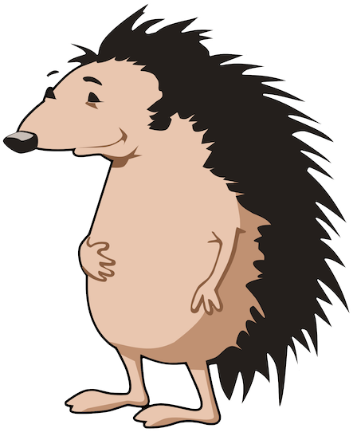
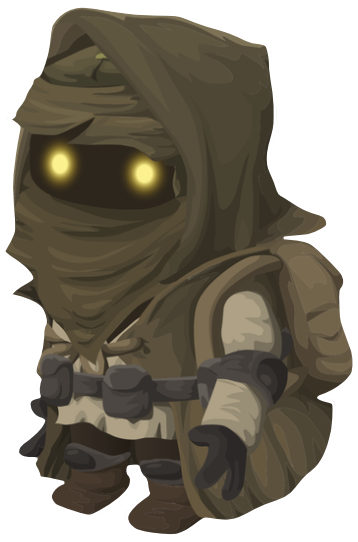
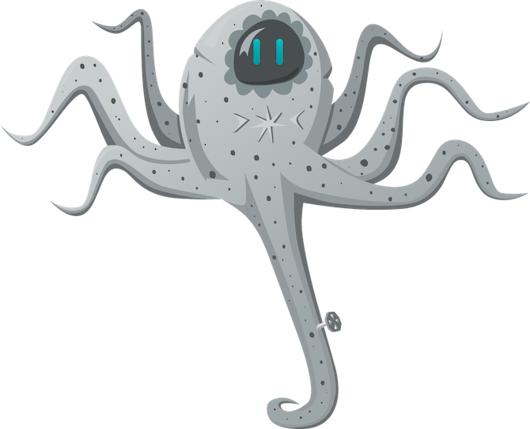
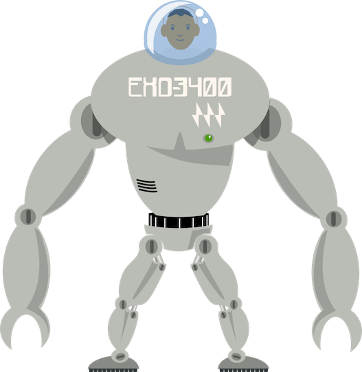
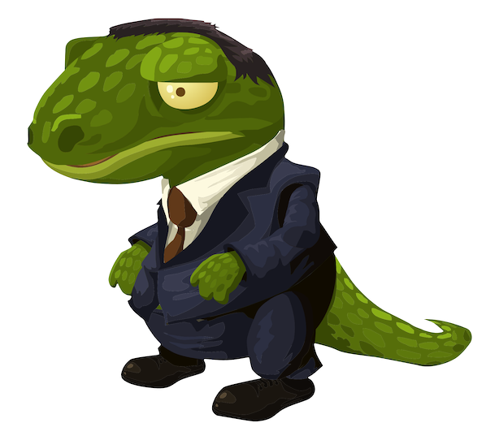

Name: Quade Tuu
Species: Simbi
Personal Strengths:
Calm minded and focused. Psychic abilities like telekinetic flight and shared perspective. Versatile biology in extreme environments. Strong moral compass. Advocate for ethical scientific and democratic practices.
Species Attributes:
Ave. Height: 0.54m | Ave. Weight: 14kg
Small, a-mortal, genetically designed beings. Simbi maintain the greatest understanding of genetics of any species. Psionic energy gathers in their tails granting them levitation and other psychic abilities.
Species History:
Born from genetic experiments of an extinct race seeking immortality. Simbi are amortal beings that reproduce asexually to form a "young" and "elder" simbi; the latter inherets all genetic damage.

Name: Ginger
Species: Heraldhog
Personal Strengths:
Great attention to detail and project management. Non-confrontational. Seeks to empathize with others before making controversial decisions. Speaks four common galactic languages. Always socially and culturally aware.
Species Attributes:
Ave. Height: 1.7m | Ave. Weight: 86kg
Bipedal species with quill covered backs. Sensitive to stress: causes involuntary rolling into spiny ball. Social creatures that rely heavily on relationships and alway seek to keep the peace in the room.
Species History:
Heraldhogs have always been happy with the simple life and It took a long time for them to venture beyond their planet. Curiously the galaxy become more peaceful after their introduction.

Name: Fral
Species: Goblin
Personal Strengths:
Excellent problem solver. Studious and fast learner. Robust storyteller and orator. Has experience seeing beyond 4 dimensional space. Able to work efficiently under stressful conditions.
Species Attributes:
Ave. Height: 0.79m | Ave. Weight: 19kg
Short. Excellent sight. Very intelligent and fast moving creatures. Able to think about and solve multiple problems at once. Much about Goblins is unknown. It's rumored they came from a different universe unintentionally.
Species History:
Unknown. Goblins are a young species to be so technologically advanced. It's rumored the Goblin people came from a different universe unintentionally.

Name: O8-21
Species: Octodroid
Personal Strengths:
Able to lift objects 3 times its own weight. Upgraded with processing bandwidth to think while working. Newfound curiosity about everything. Frendly with all crewmates. Excellent collaborator.
Species Attributes:
Ave. Height: 3m | Ave. Weight: 225kg
Large robot with 8 limbs. Can stand with one appendage, walk with two, and even work using all. Only knowledgeable about pertinent job responsibilities. Very curious about the world and shipmates’ roles. Recently udated with free will.
Species History:
Originally built soley for ship maintanence, recent changes in Galactic laws pertaining to AI have granted Octodroids new opportunites and "Free Will" if they desire a Choices_1.0 upgrade.

Name: Arno
Species: Human (Born Beyond Native Heliosphere)
Personal Strengths:
Skilled with machines. Can aid Octodroids with heavy equipment. Able to traverse a ship’s outer hull with exosuit. Understands some programing basics for AI systems. Speaks two common galactic languages.
Species Attributes:
Ave. Height: 2.6m | Ave. Weight: 181kg
Four nucleotide DNA. Protective nano-alloy exosuit surrounds the entire human body and enhances senses and physical capabilities. The nano-alloy allows the appendages to morph into other tools and configurations.
Species History:
Human bodies became frail over the many years they lived in space. Most humans now live inside of exosuits to work and survive in the galaxy.

Name: Chester
Species: Toupénole
Personal Strengths:
Confident and direct. Seems to have travelled to more places than any other applicant. Has experience seeing beyond 4 dimensional space. Experienced with Toupénole medicines.
Species Attributes:
Ave. Height: 1.6m | Ave. Weight: 74kg
Ancient species. Has advanced sense of hearing and smell. Cold or warm blooded depending on environment (known as “blended blood.”) Prefers to work with other reptilian species when possible.
Species History:
Escaped extinction when home-galaxy was consumed by growing black hole and journeyed here. Friendly to all species, but excited to have discovered other sentient reptilian species exist in our galaxy.